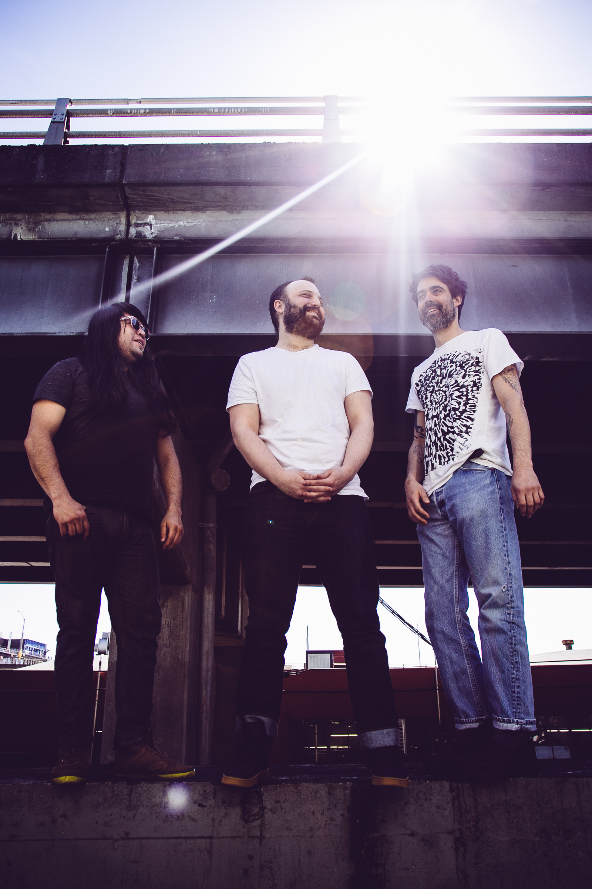
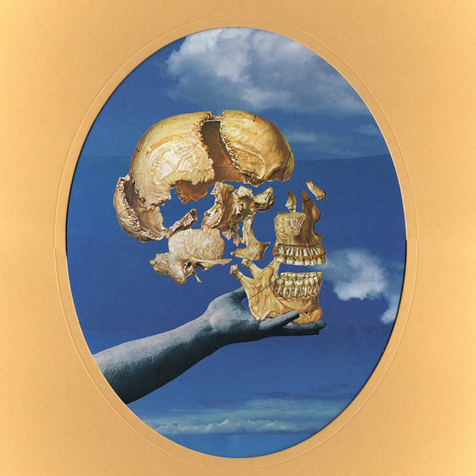

Sun Angle
Sun Angle’s singular brand of frenetic and sprawling psych punk draws inspiration from mid-period SST bands like Meat Puppets while simultaneously connecting the threads between Can, 70s-era Miles Davis and early Fleetwood Mac. Formed in 2010 by Charlie Salas-Humara [Panther], Marius Libman [Copy] and Papi Fimbres [Orquestra Pacifico Tropical], Sun Angle set out to push the limits of what each member was capable of while sonically and rhythmically reaching the outer boundaries of pop structures. Their new record, Skullflower, is an exploration of the familiar and unfamiliar, delving deep into punk, jazz, art pop, A.M radio, cumbia and sound exploration. Lyrically, Skullflower’s non sequiturs reveal topics such as religion, death, The Grateful Dead, lost dreams, and hope. Sun Angle’s blistering live set is both chaotic and laser focused, punctuated between songs by social and comedic commentary as a reprieve from the aural onslaught [which you may recognize from Salas-Humara and Libman’s cult radio show “Heavy Breather” on xray.fm]. Skullflower is out on XRAY Records October 21st, 2016.

Sun Angle - Skullflower